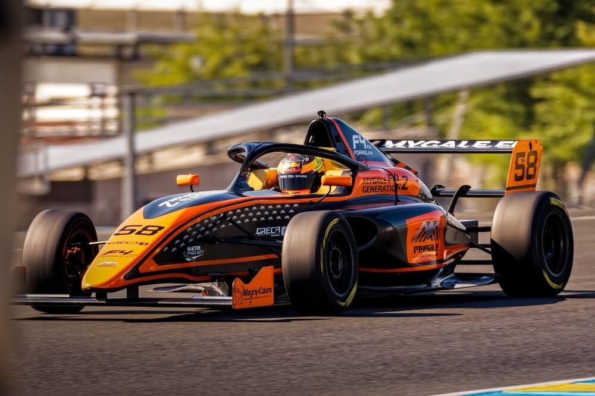

Racefriends, lo tau pasti tau ajang balap mobil Formula 1 atau F1, kan? Nggak cuma Formula 1, tapi masih banyak berbagai macam kelas dalam balap mobil Formula, lho. Kalau lo pencinta olahraga balap ini, pasti juga udah kenal sama sejumlah seri balapannya yang dikenal dengan istilah Grand Prix.
Dari dulu hingga sekarang, tradisi ajang balap mobil Formula 1 ini berpusat di Eropa. Grand Prix sendiri udah pernah diadakan di berbagai negara dunia. Buat menuju F1, tentunya para pembalap harus melalui tahapan terlebih dahulu di arena penggodokan.
Hal inilah yang menghadirkan berbagai kategori di bawah F1, mulai dari F2, F3, hingga F4. Tapi, jalan menuju F1 nggak melulu dilakukan cuma dengan satu jalur. Karena sesungguhnya ada banyak kejuaraan formula alternatif dengan tingkat kompetisi dan gengsi yang nggak kalah dari ‘formula bernomor’.
Penasaran sama berbagai macam kelas dalam balap mobil formula? Langsung aja nih simak ulasannya
Jenis-Jenis Kelas Di Formula One
Formula 4

Bisa dibilang, Formula 4 atau F4 merupakan pintu buat memasuki dunia formula. Kategori ini biasanya dikhususkan untuk pembalap muda, yang penyelenggaraannya dilakukan kepada masing-masing region. Selain itu, regulasinya pun sangat ketat, bahkan South East Asia F4 Championship punya konsep one make, one team, one cost, one data, dan one dream.
Formula 3
Seenggaknya ada 9 kejuaraan F3 yang aktif di seluruh dunia. Kelas formula ini konon disebut sebagai lompatan penting buat menuju F1. Kalau ada pembalap yang sukses di sini, bisa dibilang peluang menuju F2 dan test driver F1 bakal terbuka lebar. Dalam struktur superlicense terkini FIA, F3 menempati urutan poin tertinggi kedua setelah F2, GP2, dan IndyCar
Formula 2
Sebenarnya, nama F2 sendiri baru dipakai sejak tahun 2018 lalu untuk menggantikan GP2 yang dulunya bernama F3000. F2 sendiri merupakan arena penggodokan pembalap sebelum masuk ke F1. Buat mengendalikan biaya, semua tim menggunakan sasis, mesin dan ban dari produsen sama. Banyak pembalap F1 seperti Lewis Hamilton, Romain Grosjean, hingga Nico Hulkenberg merupakan lulusan GP2.
Formula 1
Nah, tujuan akhir dari setiap pembalap muda saat memulai karir di F4 atau F3, tentunya adalah F1. Balap mobil ini udah diselenggarakan sejak 1950 tanpa henti. Kalau ada pembalap yang menjuarai ajang ini, maka dia merupakan pembalap terbaik di dunia. Sejak 2014, F1 mewajibkan penggunaan powertrain hybrid.
Itulah beberapa jenis kelas dalam balapan single sitter formula one. Sebenarnya masih ada kelas lain diluar 4 kelas yang telah ditampilkan diatas seperti indycar, usf2000, formula mazda dan lainnya. Tetapi informasi yang saya dapatkan belum cukup untuk membuat kelas lain diluar formula one.